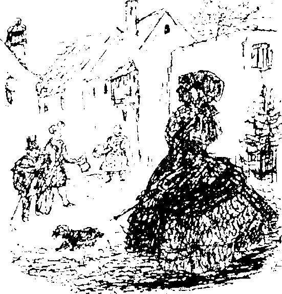

I
İlk dikkatimizi çeken, Rüya Ülkesi halkının giyimi oldu. Zamanın o kadar gerisindeydi ki çok komikti! Özellikle kendilerine “yüksek sınıf’ diyenlerin giyimi bir alemdi.
“Bu insanların hepsi anne babalarının ya da dedeleriyle ninelerinin giysilerini giyiyor,” dedim karıma. Erkekler, Invemess işi pelerinler, modası geçmiş, eğimli şapkalar takıyor, rengarenk süslü mantolar içinde dolaşıyor, kadınlar başlarına bone takıp omuzlarına şallar atarak, eski moda saçlarıyla kabarık etekler içinde kırıtıyorlardı. Sanki hep birlikte bir kıyafet balosuna gidiyorlardı!
Fakat asıl tepki alan bizlerdik ve birkaç gün sonra giysilerimizi ortama uydurmak zorunda kaldık. Karım yarı kabarık bir etek giymeye ikna oldu, ben de derin yakalı, nakışlı ve süslü bir manto ve 1860 modası fırfırlı bir yakalıkla tıpkı diğer insanlar gibi görünüyordum. Daha fazla ödün vermeyi kabul etmedim. Bana zorla giydirmeye çalıştıkları dar, sivri burunlu ayakkabıları giymeyi öfkeyle reddettim. İnsanların dış görünüşündeki değişikliğe sandığınızdan çok daha kısa sürede alıştık. Kısa bir süre sonra ben de yeni gelenlerin tuhaf giysilerine hayretler içinde bakmaya başlamıştım.
İlk gün en büyük kaygım bir an önce uygun bir daire bulmaktı. Karımın isteği üzerine ürkütücü saraydan elimizden geldiğince uzak oturmak istedik, şehrin uzak muhitlerini araştırmaya başladık. Ne yazık ki, Bahçe Mahallesi’ndeki büyüleyici villalar çok pahalıydı. Uzun Cadde’yi boydan boya üç kere geçtik, üçüncü geçişimizde orta yükseklikte, iki katlı, cumbalı bir apartman dikkatimi çekti. Bu binayı sanki çocukluk günlerimden beri biliyordum. “İşte aradığımız ev,” diye haykırdım. “İkinci katta aradığımızı bulacağız.” Bu güvenli tavrım karımı şaşırtmıştı. “Nasıl bu kadar emin olabilirsin?” diye sordu hafif alaylı bir gülümsemeyle. Bir neden gösteremiyordum, sadece biliyordum. Tanrıya şükür, haklı da çıktım! Gerçekten de üç odalı, mutfaklı bir daire kiralıktı. Giriş katında dükkânı olan, aynı zamanda apartmanın işleriyle ilgilenen berber bize daireyi gösterdi. Odalarda davetkar, rahat bir hava vardı, çok güzel döşenmişlerdi, fiyat da makuldu. Hemen o akşamüstü daireye taşındık.
Ev, Doktor Lampenbogen adlı birine aitti.

II
Artık biz de Rüya Ülkesi vatandaşı olmuştuk. İlk aylar boyunca günde sayısız kere buranın de tıpkı geldiğimiz yerler gibi olacağı konusunda bazı şüphelerim vardı. Daha sonra geldiğim yeri tamamen unuttum. Rüya Ülkesi’nde en olmayacak görüntülere bile o kadar alışıyordunuz ki, hiçbir şey sizi şaşırtmıyordu.
Her ne kadar kendi işimi kuramasam da, hemen düzenli bir iş buldum. İş, kendiliğinden ayağıma gelmişti. Şöyle oldu; Rüya Ülkesi’ndeki üçüncü günümüzde, ufak tefek, son derece hareketli bir beyefendi ziyaretime geldi. Kendisini, “Rüya Aynası gazetesinin yayımcısı ve editörü,” olarak tanıttı. “Gazetemiz bu ülkedeki en ünlü resimli gazetedir. Kendi baskı makinemiz var,” diye devam etti sözlerine. “İyi ki buraya geldiniz, sizin gibi birini uzun süredir bekliyorduk. Maalesef baş çizerimiz Castringius bütün yaratıcılığını kaybetti, artık ilüstrasyonlarımızı basmak için Pearl’deki bütün eski ahşap blokları satın alıp onlardan baskı yapıyoruz. Şu son sayıya bir bakın,” dedi ve cebinden bir gazete çıkardı. “Cochem, Moselle’de -Avusturya Macar İmparatorluğu Başbakanı Kont Beust ailesiyle birlikte- Savaş boyaları sürünmüş kızılderililer! Sorarım size, bunlar sanatsal mı? Rüya Ülkesi’ne uygun mu? Hatta ilginç mi?” diye haykırdı gazeteyi gözümün önünde sallayarak. “Hayır efendim, değil!” Alnındaki teri silerek bir an düşündü. Cebinden düzgün el yazısıyla yazılmış bir sözleşme çıkardı. Tek yapmam gereken imzalamaktı, bir sürü resim teslim etsem de, hiç çalışmasam da yıl boyunca her ay dört yüz kron alacaktım. Harika bir olaydı, daha önce hiç böyle bir sözleşme görmemiştim, doğal olarak hemen imzaladım. Rüya Ülkesi’nde işte böyle çabucak karar veriyorduk, kimse hiçbir şeyi ayrıntılarıyla düşünmekle vakit kaybetmiyordu. Zaten bütün iş anlaşmaları şaibeliydi. Artık düzenli bir işim vardı. Saygı duyulan bir gazetenin çizeriydim, istediğim gibi şov yapabilirdim. Rüya Ülkesi’nde önemli olan buydu, bir hırsız, bir yankesici olsanız bile önemli olan yaptığınız şeyi şova çevirebilmekti.
Editörüm arkadaş canlısı bir hareketle elindeki bastonu çevirerek açtı. Bastonun içi boştu. Sapının içinde cam bir şişe vardı, bana bir badak içki koydu. İmalı bir biçimde göz kırparak “Dirseğinize kuvvet verir,” dedi. “Resimlerinizi olabildiği kadar korkunç ve tüyler ürpertici yapın. Gazetenin tarzını sertleştirmek istiyorum,” dedi iyimser bir gülümseyişle. Memnuniyetle iç geçirerek sözleşmeyi cebine tıktı ve siyah beyaz damalı takım elbisesi içinde veda etti.
III
İnsanlar, Rüya Ülkesi’ne ilk vardıklarında çevrelerini kaplayan sahtekârlıkların pek farkına varmazlardı. İlk bakışta alışveriş ve pazarlık gelenekleri dünyanın her yerindekine benzerdi. Aslında bu göstermelik bir numara, tuhaf bir yalandı. Para ekonomisi tamamen “sembolikti”. Elinizde ne kadar para olduğunu asla bilemezdiniz. Para gelir gider, dağıtılır ve geri alınırdı, herkes biraz el çabukluğuyla başkasını dolandırırdı, ben de kısa sürede birkaç küçük numara öğrenmiştim. İşin püf noktası inandırıcı olmakta, hasmınızın gözünü boyamaktaydı.
Başlangıçta, Rüya Ülkesi halkının önerilerden ne kadar çabuk etkilendiğini görünce dehşete düştüm, fakat sevsem de sevmesem de bu durumu kabul etmek zorundaydım, giderek kendime ve başkalarına ait hayallere daldım gittim. Bu ülkede insanın talihi çok çabuk değişiyordu, insan dünyanın diğer yerlerinde olduğundan çok daha çabuk fakirleşip zenginleşebiliyordu. Bir olay diğerini takip ediyordu. Fakat bütün bu karmaşanın ortasında bile olaylarda güçlü bir elin parmağı olduğunu hissediyordunuz. Anlaşılmaz olayların arkasında bu gücün varlığını bariz bir şekilde hissedebiliyordunuz. Her şeyin dağılıp yıkılmamasının tek ve gizli sebebi buydu. En gizli yerlere bile ulaşıp adalet dağıtan çok kudretli bir güçtü bu, her olayın dengesini sağlıyordu. Eğer biri umutsuzluğa kapılmışsa, kimden yardım isteyeceğini bilmiyorsa, dualarını bu güce yönlendiriyordu. Korkunç bir merakla dolu bu sınırsız güç, bu göz, en karanlık köşeleri bile görüyordu, her yerdeydi, hiçbir şey dikkatinden kaçmıyordu. Rüya Ülkesi’nde ciddiye alınan tek şey bu güçtü, geriye kalan her şey geçiciydi.
IV
Size işlerin nasıl yürüdüğüne dair birkaç örnek vereyim.
Pearl’deki ilk günlerimizden birinde bir sokak haritası almak istedim. Bir sürü ıvır zıvır satan en büyük dükkânlardan birine gittim, sanırım bizim binanın bitişiğindeki Max Blumenstich’in dükkânıydı.
“Harita mı? Yeniler henüz elimize ulaşmadı, eski kopyalardan biri de işinizi görür sanırım?” Duvara asılmak üzere yapılmış geyik boynuzlarının sağına soluna, şamdanların yanına, eski kutulara, dükkânın her köşesine iyice baktılar fakat tek bir harita bulamadılar. En sonunda çırak bronz üzerine işlenmiş korkunç bir harita çıkardı.
“Bunu alın. Eminim işinize yarayacaktır. Bunu mutlaka almalısınız, kesinlikle ihtiyacınız var. Sadece yetmiş iki kron!” İkna kabiliyetini sonuna kadar kullanırken sesi adeta kibarlıktan eriyordu. Ona bir kron verdim, bana haritayla birlikte bir de tırnak makası hediye etti.
Yeni gelenler bu durumu kendi çıkarları için istismar etmeye çalışırlar, fakat bir süre sonra dereyi görmeden paçaları sıvamış olduklarını anlarlardı. Rüya Ülkesi’nde kader açgözlüydü: tasarruf ettikleri para birdenbire uçar giderdi. Bu kendini beğenmişler en temel ihtiyaçları için fahiş fiyatlar ödemek zorunda kalırlar ya da kapılarına “ücreti teslimde ödenecek" olan paketler yığılırdı. Paketleri kabul etmezlerse başlarına daha da kötüsü gelirdi, mesela hastalanırlar, doktorlar da tedavi için inanılmaz miktarda paralar talep ederlerdi. Daha önce hiç görmedikleri alacaklılar kapılarına dayanır, para isterlerdi. İtiraz etmek hiçbir işe yaramazdı, alacaklılar yanlarında şahitleriyle çıkar gelirlerdi. Böylece hiçbir şeyin dengesi bozulmuyor, kimse kazançlı ya da borçlu kalmıyordu. Hesapları tutan görünmez muhasebeciyle pazarlık etmek mümkün değildi. Durumun böyle olduğunu anlar anlamaz rahatladım.
Geldiğimizin ertesi gecesi, üniformalı bir uşak kapımızda belirmişti. Efendisi -kulağa asil gelen bir isim söyledi- parasını ödediği çizimleri sabırsızlıkla bekliyordu, uşak da onları almaya gelmişti. Ne yapabilirdim ki? En iyi çalışmalarımdan beş tanesini paketledim ve özür dileyen kibar bir mektup yazdım. Resimlerime ne oldu hiç bilmiyorum.
Her gün, evimizin çaprazında, karşı kaldırımdaki bir kafeye gidiyordum. Bir gün eve döndüğümde karım bana harika sebzeler, kuşkonmaz, karnabahar, güzel meyvelerle dolu bir sepet gösterdi, hatta sepette iki tane de keklik vardı.
“Bunların hepsi pazardan geldi. Tahmin et ne kadar tuttu?" diye sordu neşeyle.
“Ne kadar?”
“Hepsi için sadece yirmi kreuzer ödedim.”
Ben de ona kafede bir kutu kibrit için beş kron ödemek zorunda kaldığımı itiraf ettim.
Bazen cebinizde yüzlerce kron olur, bazen hiçbir şey olmazdı. Para olmadan da gayet güzel idare ediyorduk. Satıcıya bir şey veriyormuş gibi yapmanız bile yetiyordu. Bazen hiçbir şey vermeden bir şey satın almak bile mümkündü. Hepsi aynı kapıya çıkıyordu.
Burada, hayaller gerçek olmuştu. Hayret verici olan, aynı hayalin aynı anda birçok kişinin zihninde oluşmasıydı. İnsanlar hayal ettikleri şeylere inanıyorlardı.
Tipik bir örnek vereyim. Toplumda iyi bir mevki sahibi olan bir adam bir sabah yoksul olduğuna inanarak uyandı. Karısı ağladı, arkadaşları üzüldü. Mallarını hacizlemek üzere hiç vakit kaybetmeden mübaşir geldi, eşyalar açık arttırmayla satıldı, onlar evlerinde kalan üç beş parça eşyayı yıkık dökük, virane bir mezbeleye taşıyamadan önce eve yeni birileri yerleşmişti bile. Bir ay sonra bunların hepsi unutuldu, kaderleri kötü bir oyun oynamış olsa da çok mutluydular.
Tabii ki üst sınıf şahsiyetler gösteriş ve lüks içinde yaşıyordu. Sınıflar arası kıskançlık birincil problemleri olmadığı için, meselenin diğer yüzü, yani sadece göze çarpıyor olmaları, onların talihsizliğiydi. Herkes kendi işine bakıyor, kendi sevinçleri ve sorunlarıyla ilgileniyordu. Her şey yolunda gittiği sürece herkes mutluydu. Bütün Rüya Ülkeliler ülkelerini ve şehirlerini çok seviyorlardı. Ben de Rüya Aynası’nın çizeri olmaktan çok memnundum, o sıralarda Patera’yı ziyaret etmeye çalışıyor, fakat bir türlü başarılı olamıyordum.
Onu görmek her zaman ve her seferinde başka bir nedenden dolayı imkânsızdı. Bir keresinde Efendimizin işinin başından aşkın olduğunu ve kimseyi kabul edemeyeceğini söylediler, başka bir seferinde ülke dışındaydı. Sanki kötü bir ruh sinirlerimi bozmaya karar vermişti. Derken huzura kabul edilmek için Arşiv’de bilet satıldığını duydum ve oraya gittim. Kapının üzerinde asılı savaş silahlarının altından geçerken kendimi görevlilerin huzurunu kaçırmaya çalışan bir başbelası gibi hissedip bir an için vicdan azabı çektim. Kapıcı uyuyordu. Yolumu kendi başıma bulmaya karar verdim ve on, on iki kadar ulağın beklediği ferah bir bekleme odasına girdim.
Onbeş dakika boyunca sanki görünmezmişim gibi davrandılar. Bir tanesi bile benimle ilgilenmedi. Sonunda biri sert bir tavırla ne istediğimi sordu, fakat yanıtımı beklemedi. Komşu masadaki arkadaşıyla konuşmaya devam etti. Başka bir görevli daha yardıma hazır davrandı ve ne istediğimi sordu. Ona söylediğim zaman sarı, buruşuk yüzünde öfkeli bir bakış belirdi. Uzun piposundan birkaç nefes alıp yan odayı işaret etti ve “İçeride,” dedi.
Kapıdaki büyük işaret levhasının üzerinde; Çalmayınız, yazıyordu. “İçeride" adamın biri uyuyordu. Evet, şaka yapmıyorum, ‘Düşünen Adam’ pozunda kımıltısız uyuyan görevlinin canlanma belirtileri göstermesi için üç kere boğazımı temizlemem gerekti. Kusursuz bir küçümseme ifadesiyle beni baştan aşağı süzdü, sonra kulak tırmalayan bir sesle “Ne istiyorsun? Çağrıldın mı? Yanında belgelerin var mı?” diye sordu.
Kesinlikle dışarıdaki görevliler gibi lafı kısa kesmiyordu. Tam tersine hiç durmadan bilgi veriyordu. “Huzura kabul edilmek için doğum, vaftiz belgelerin ve evlilik cüzdanın hariç babanın diploması ve annenin aşı belgeleri gerekiyor. Soldaki koridorun sonundaki 16 numaralı odada mali durumun, eğitimin ve aldığın madalyalarla ilgili bilgi vermelisin. Kayınpederinin karakterini anlatan bir referans mektubu da istenir, ama şart değildir.”
Bunları anlattıktan sonra başını salladı, masasının üzerine eğilip gördüğüm kadarıyla kalemini mürekkebe batırmadan yazı yazmaya başladı. Şaşkınlıktan kımıldayamaz halde kalakalmıştım. Bütün faturalarımı istemedikleri için kendimi şanslı saymalıydım! Mahçup bir tavırla kekeledim; “Korkarım bütün bu belgeleri toplamam imkânsız. Yanımda sadece pasaportum var. Buraya Herr Patera’nın konuğu olarak geldim, ismim şudur."
Sözümü bitirince hayatımın şokunu yaşadım. Soğuk tavırlı adam birdenbire yerinden fırladı. “Daha önce neden söylemediniz?
İsminiz zaten listede yer alıyor. Sizi hemen ekselanslarının huzuruna götüreyim!”
Adam birden kibarlık abidesine dönüşmüştü. Çift kişilikli olabilir miydi? Anlayamıyordum.
Kasvetli koridorlarda sonu gelmez bir yürüyüş başladı, geçtiğimiz bürolardaki kâtipler sanki korkunç bir iş yaparken yakalanmışlar gibi yerlerinden sıçrıyorlardı, boş kabul odalarından, belgeler ve dosyalarla dolu, tavana kadar uzanan rafların durduğu odalardan geçtik. En sonunda her türlü insanın oturduğu büyük bir bekleme salonuna geldik. Rehberim ve ben hemen özel çalışma odasına alındık. Ekselansları orada tek başına, masasında oturmuş bekliyordu. Zavallı görevli, zarif reveranslar yapmasına rağmen ortadan kaybolmadan önce sert sözlerle azarlandı.
Ekselansları çok müthiş bir varlıktı. Bunu çevresindeki eşyalardan anlayabilirdiniz, fakat dahası vardı. Kendisi de göz alıcı ayrıntılarla donatılmıştı. Örneğin; giysileri baştan aşağı altın işlemeliydi, ceketine de çeşitli kurdeleler iğnelenmişti. Ayrıca geniş ve kırmızı bir kuşak göğsüne çaprazlama takılmıştı. Üzerinde başka rütbe işaretleri varsa da anlayamadım. Muhtemelen vardı, ama ben görememiştim.
Yalnızdık. Arşivdekilerin tersine, çok arkadaş canlısıydı. Beni dinledikten sonra nezaketle konuştu. “Elbette beyefendiciğim, elbette,” dedi. “Biletiniz size hemen ulaştırılacak.” Sonra, sanki biri düğmesine basmış gibi ayağa kalktı ve görünmez bir dinleyici kitlesine nutuk çekmeye başladı:
“Beyler! Beyler! Toplumun refahı ve onurumuz adına, hükümet bütün sorumluluğu üstleniyor. Taleplerinizi tek tek karşılamakta bir saniye bile tereddüt etmeyeceğim. Yoksulların refaha kavuşturulması konusunda her zaman huzuruma çıkabilirsiniz. İlk amacımız buradaki tiyatroyu çalışır hâle getirmektir. Umarım bu girişimimize gösterdiğiniz güçlü desteğin hakkını verebilirim. Fransız Mahallesi’ndeki bazı kurumlara getirdiğimiz yeni yönetimler garantilemiştir ki... beyler... Sizin yürekten kopup gelen düşüncelerinizi ifade ettiğimden eminim, ne zaman ki... ne zaman... ne zaman... ” Konuşması akıcılığını kaybetti, şaşkın, donuk bakışlarını bana dikti. Eğilip, teşekkürlerimi sunarak huzurundan çekilip onu bu utanç verici durumdan kurtardım. Arşiv hakkında iyi şeyler düşünmüyordum. Huzurunu ve sessizliğini bir daha bozmadım.
Bu deneyim sadece yeni gelenlerin başına gelirdi. Bu yolu takip ederek hiçbir yere varamazdınız. Son derece önemli dilekçeler, form doldururken yapılan en ufak bir hata yüzünden geri çevriliyordu. Kurul, tasarılarınızı bir kalemde silip atabilirdi. Böylece huzura kabul belgem bana geri ulaştı, ertesi gün de belgenin geçersiz olduğunu söyleyen bir mektup aldım.
Hükümet sadece görünüşte vardı. Ortadan kaldırırsanız Rüya Ülkesi’nin gidişatında ne iyi ne kötü hiçbir değişiklik olmazdı. Dünyanın her tarafından getirilen kabarık dosyaların Rüya Ülkesi’yle hiçbir alakası yoktu. Gerçekte, Arşiv’in sıkıcı atmosferi sadece bütünün çeşitliliğine katkıda bulunan bir türü, yani devlet memurlarını yetiştirmek için vardı.
Asıl hükümet başka bir yerdeydi. Bu deneyimlerden sonra Patera’yı ziyaret etme fikrinden bir süre için vazgeçtim. Zaten başka olaylar beni yeterince meşgul ediyordu.
V
Yaşadığımız evi, sanki birkaç hafta önce oradaymışım gibi net bir biçimde zihnimde canlandırabiliyorum. Zemin katta berber dükkanı vardı. Berber, sarışın, bekar, eğitimli bir gençti, altın çerçeveli bir gözlüğü vardı, felsefeye tutkundu. Fikirlerini serbest bırakıp daldan dala atlayarak felsefe yapıyordu. Çok bilgiliydi ve bildiklerini saklamıyordu. Sert bakışlar atarak, “Sana anlatabileceğim neler neler var bir bilsen," derdi.
Kim bilir beni ne sanıyordu, fakat başlarda onun güveni beni çok eğlendiriyordu. “Kant, işte büyük hata odur! Hah! Kendinde ki şey’i bu şekilde hafife alamazsın. Dünya, her şeyden önce ahlaki bir sorundur, kimse beni tam tersine ikna edemez. Uzay zamana kur yapar, anlıyorsunuz ya, birleşme noktası, yani şimdiki zaman ölüm veya onun yerine koyabileceğiniz başka bir şeydir, isterseniz tanrı diyelim. Bunların tam ortasında canlanma mucizesi vardır: yani madde. Madde, öznenin dış görünüşünden başka bir şey de